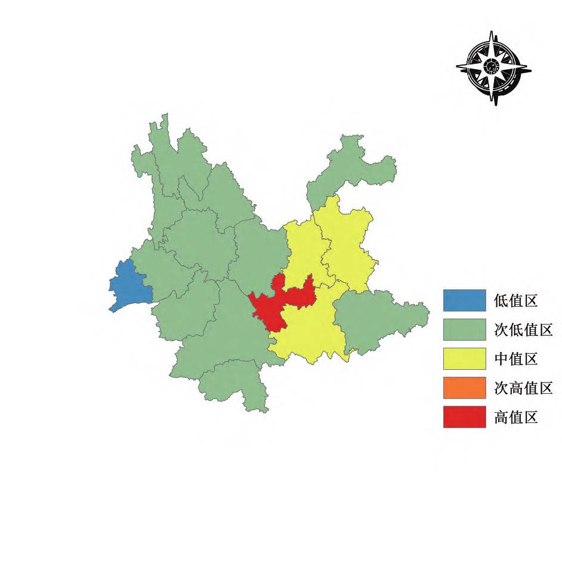
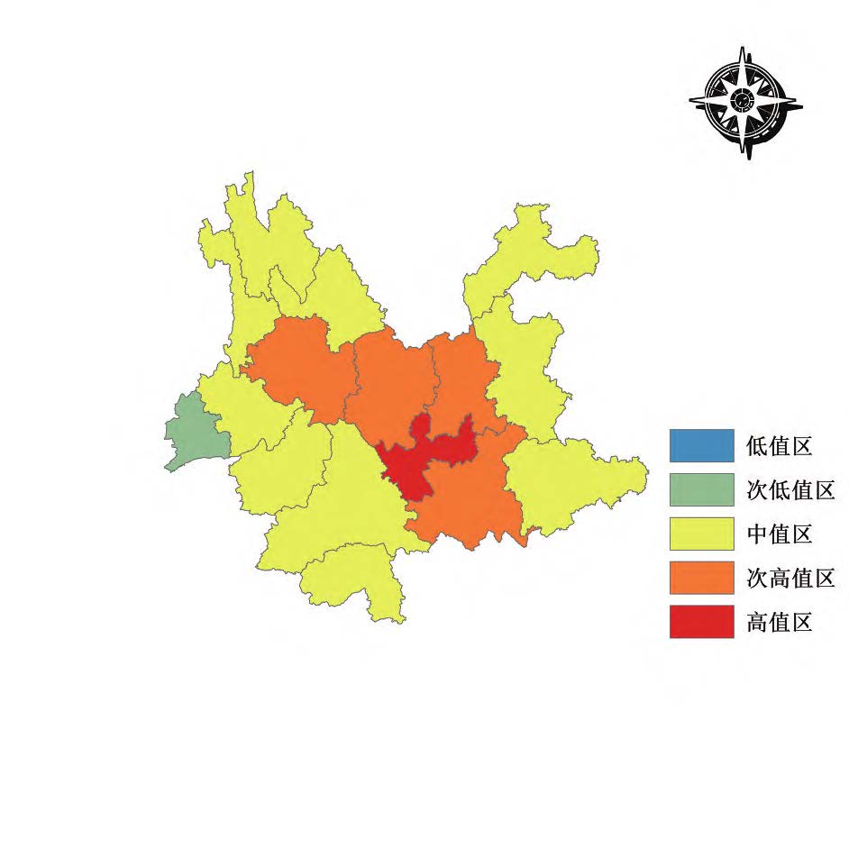
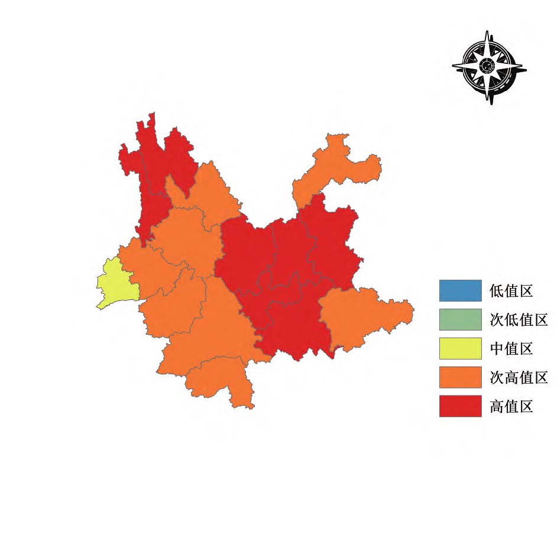

^[toc]^
$$LED=\frac{T_{GDP}}{B}$$
$$Nich=\frac{Y_{2i}-Y_{1i}}{Y_2-Y_1}$$
$$\begin{aligned}
&T=\sum^N_{i=1}\frac{P_i}{P}\log{\frac{y}{y_i}}=T_{WR}+T_{BR} \
&T_{WR}=\sum^G_{g=1}P_gT_g \
&T_{BR}=\sum^G_{g=1}P_g\log{\frac{Pg}{V_g}}
\end{aligned}$$



| 参数 | 2011年 | 2014年 | 2017年 | 2020年 |
|---|---|---|---|---|
| $Moran's\enspace I$指数 | 0.240678 | 0.105854 | 0.167725 | 0.178105 |
| 方差 | 0.019395 | 0.013213 | 0.014829 | 0.011380 |
| $Z$ | 2.206897 | 1.500860 | 1.924824 | 2.94496 |
| $P$ | 0.027321 | 0.133392 | 0.054251 | 0.021762 |
| 驱动因素 | 探测因子 | 探测指标 | q |
| 城市经济市场消费 | 人均GDP | Xb | 0.4149 |
| 地均社会零售商品总额 | X2 | 0.4643 | |
| 城市人口与劳动资源 | 人口密度 | X3 | 0.0369 |
| 常住人口数量 | X4 | 0.0238 | |
| 城市绿化环境条件 | 建成区绿化覆盖率 | X5 | 0.2168 |
| 城市社会发展状况 | 独立研究与开发机构数量 | X6 | 0.1805 |
| 万人拥有汽车数量 | X7 | 0.0911 |
随着中国城市化、工业化进程的不断加快，土地越来越被人们所关注，成为最有潜力以及最有活力的国有资产。土地经济密度作为区域经济增长与土地集约利用程度的映射也逐渐进入广大学者们的视野。同时，耕地过度“非农化”和城镇土地利用效率低下的问题日益严重，如何有效提高土地利用效率和土地管理水平，成为社会各界关注的焦点。土地经济密度作为衡量土地利用经济效益和土地集约利用程度的重要指标，能够反映地域空间扩展与其空间经济产出过程协调的状况，同时也可以对地区的资源供给和产业调整作出快速高效的判断[^1][^2]。目前，相关学者对土地经济密度的研究主要集中于探讨时空特征和差异[^3][^4]、时空演变及影响机理[^5][^6]、与产业结构和城市经济的关联协调[^7][^8]、研究方法综述[^9][^10]等方面，研究尺度多集中于全国[^11]、城市群[^12][^13]、省域或某个城市[^14][^15]。云南省作为中国西部边境省份，土地资源类型多样，垂直地带性分异规律显著，经济发展潜力大。本研究以云南省 16 个地州市为研究对象，从地州市的尺度探究云南省 2011—2020年土地经济密度的时空演变、空间差异和驱动因素，为云南省土地资源优化配置与经济社会可持续发展提供依据。
[^1]: 周敏，胡碧霞 . 东北地区城市土地经济密度格局演变［J］. 城市问题，2018（10）：62-68. [^2]: 王宏亮，郝晋珉，管青春，等 .内蒙古自治区城镇土地经济密度的区域差异及其收敛性分析［J］. 中国农业大学学报，2018，23（2）：139-146. [^3]: 匡兵，卢新海，周敏，等 .中国地级以上城市土地经济密度差异的时空演化分析［J］.地理科学，2017，37（12）：1850-1858. [^4]: 贝涵璐，吴次芳，冯科，等 .土地经济密度的区域差异特征及动态演变格局——基于长江三角洲地区的实证分析［J］. 自然资源学报，2009，24（11）：1952-1962. [^5]: 付潇，李谦，王佑汉，等 .嘉陵江流域土地经济密度时空演变特征［J］. 西华师范大学学报（自然科学版），2021，42（3）：306- 313. [^6]: 梁流涛，杨泞溪，区志源，等 .黄河流域城镇土地经济密度多尺度空间格局及影响因素分析［J］.地理科学，2021，41（8）：1336-1344. [^7]: 姚飞，陈龙乾，王秉义，等 .合肥市产业结构与土地经济密度的关联协调研究［J］.中国土地科学，2016，30（5）：53-61. [^8]: 胡涛，张安明，杨庆媛，等 .重庆市产业结构与土地经济密度的关联协调研究［J］.水土保持研究，2018，25（5）：250-256. [^9]: 刘小莹.土地经济密度研究方法综述［J］.黑龙江农业科学，2018（12）：166-169，175. [^10]: 毛巧梅 . 经济密度时空格局研究方法综述［J］. 经济视角（下），2013（6）：78-79. [^11]: 张富刚，郝晋珉，姜广辉，等 . 中国城市土地利用集约度时空变异分析［J］.中国土地科学，2005（1）：23-29. [^12]: 余乐佳 . 长江中游城市群城市土地经济密度空间关联的网络结构研究［D］.武汉：华中师范大学，2021. [^13]: 张明斗，毕佳港 . 长三角城市群城市土地经济密度的空间差异与格局演变［J］.管理学刊，2020，33（4）：17-26. [^14]: 陆雅雯，何如海，赵敏 .安徽省城市土地经济密度时空差异及驱动力分析［J］.长春理工大学学报（社会科学版），2021，34（2）：88-95. [^15]:方斌，吴金凤，孟颖 . 江苏省土地经济密度的时空变异分析［J］.农业现代化研究，2010，31（6）：716-719.